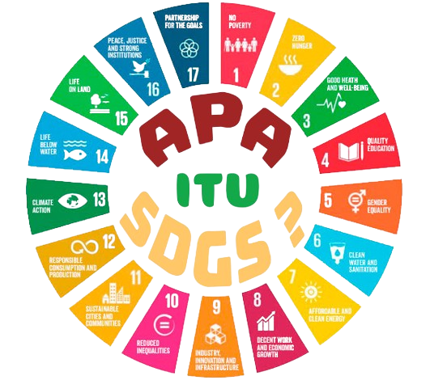

SDGs/TPB adalah sebuah rangkaian dari 17 tujuan global yang ditetapkan oleh Perserikatan Bangsa - Bangsa
(PBB) dengan tujuan untuk mencapai kehidupan yang lebih baik dan lebih berkelanjutan bagi semua orang. 17
tujuan tersebut, terkait dan saling mendukung untuk mengatasi berbagai tantangan global yang kita hadapi.
Pada laporan ini, saya memilih tujuan nomor 4, yaitu Pendidikan Berkualitas.
PENDIDIKAN BERKUALITAS
- Menjamin Kualitas Pendidikan yang Inklusif dan Merata serta Meningkatkan Kesempatan Belajar Sepanjang Hayat untuk Semua
- AN (Asesmen National): Sebuah program evaluasi, diselenggarakan oleh Kemdikbud untuk menilai perkembangan kemampuan siswa. Ada 2 kompetensi mendasar yang diukur AN, literasi membaca dan literasi matematika (numerasi).
- Target 1: Pendidikan dasar dan menengah gratis
→ menjamin, semua anak mendapatkan pendidikan dasar (sd) secara gratis dan berkualitas.
- Target 2: Akses yang sama terhadap pendidikan anak usia dini yang berkualitas.
→ Akses pendidikan tb/tk yang berkualitas.
- Target 3: Akses yang sama ke pendidikan teknis, kejuruan, dan pendidikan tinggi.
- Target 4: Tingkatkan jumlah orang dengan keterampilan yang relevan untuk kesuksesan finansial.
→ Pemuda dan dewasa memperoleh keterampilan yang lebih professional/spesifik.
- Target 5: Hilangkan semua diskriminasi dalam pendidikan.
- Target 6: Literasi dan numerasi universal
- Target 7: Pendidikan untuk pembangunan berkelanjutan dan kewarganegaraan global.
- Target A: Membangun dan meningkatkan sekolah inklusif dan aman.
- Target B: Memperluas beasiswa pendidikan tinggi untuk negara-negara berkembang.
- Target C: Meningkatkan pasokan guru yang berkualitas di negara-negara berkembang.